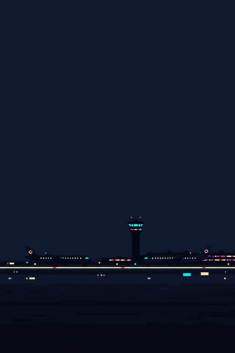
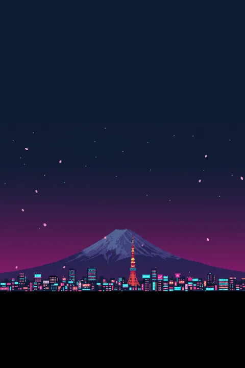
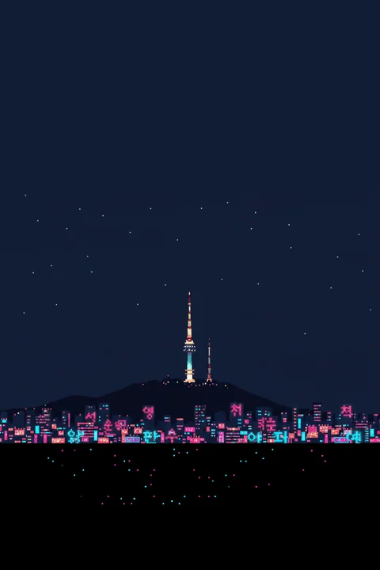
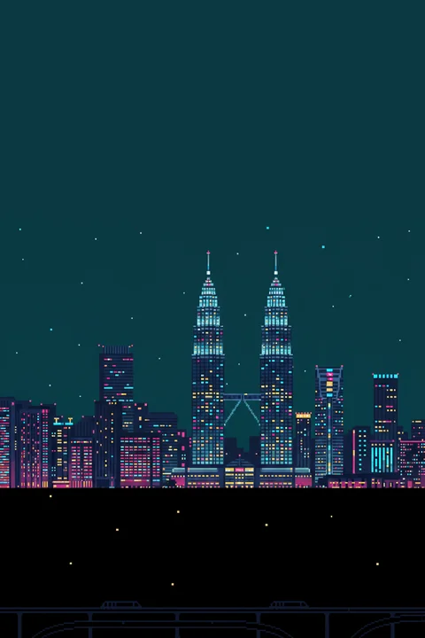
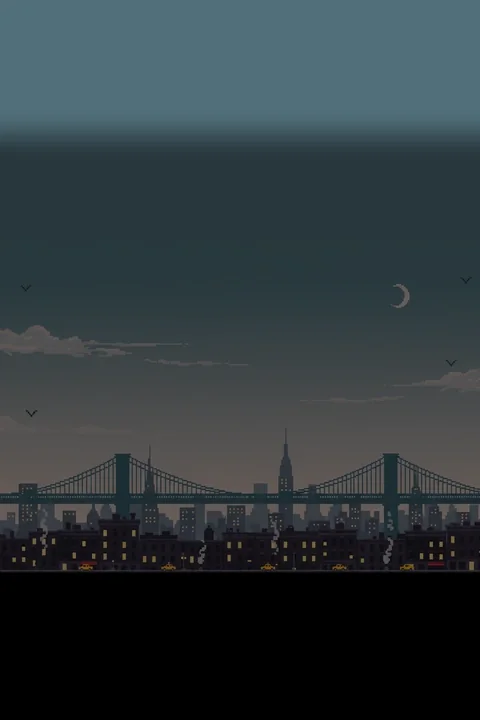
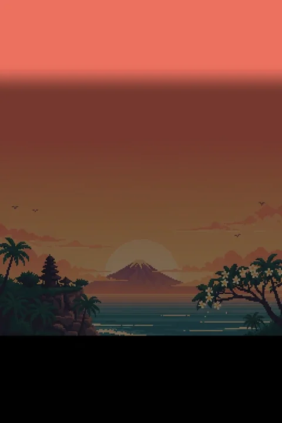
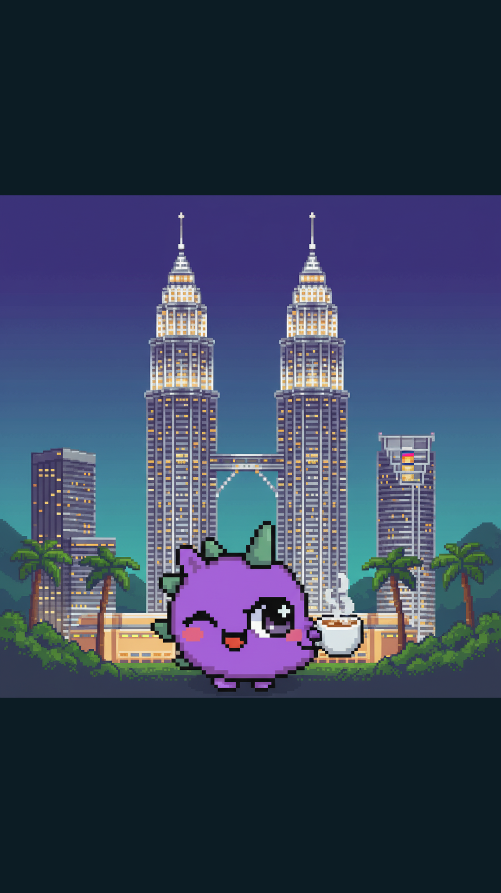
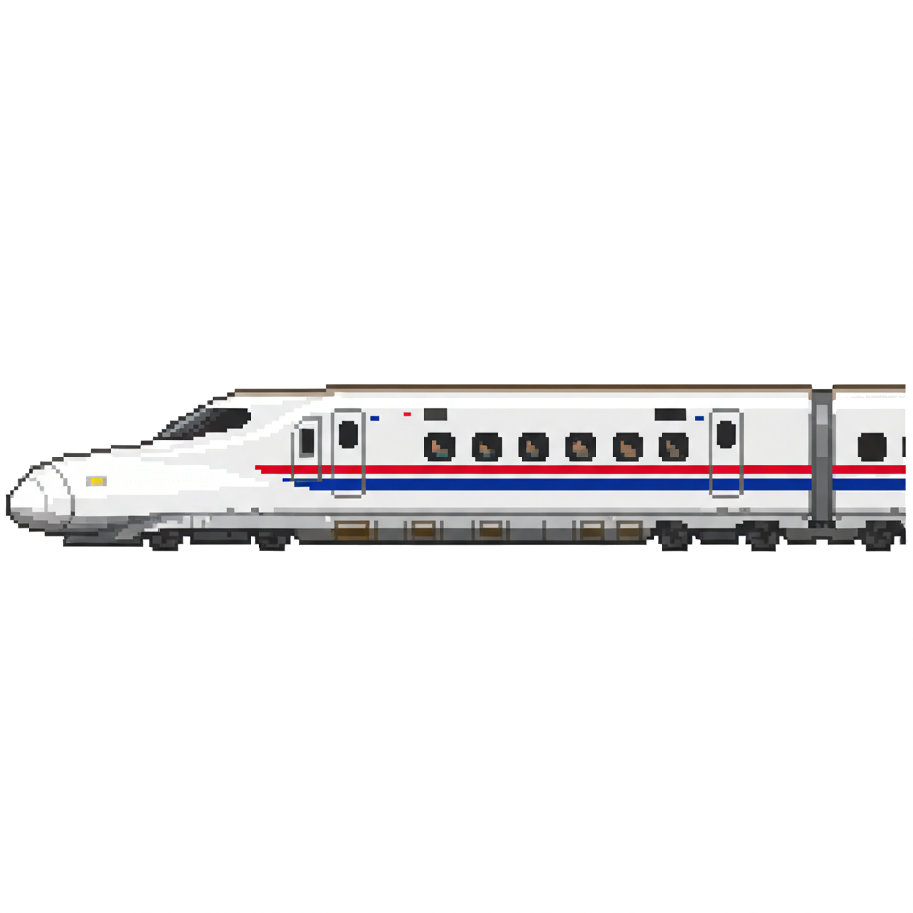
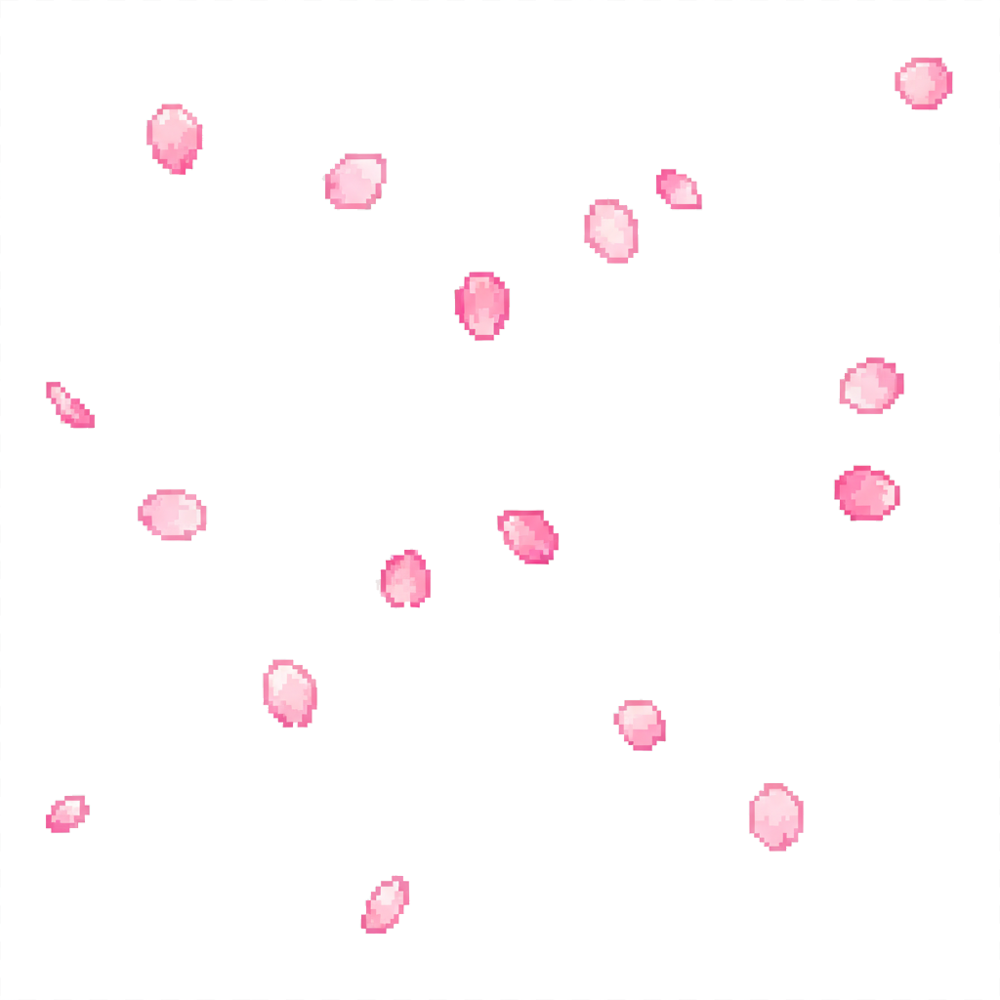
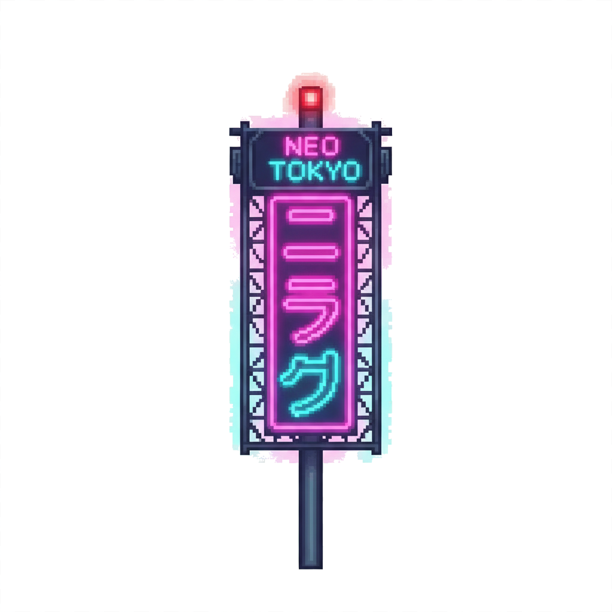

Trippie Chomp — Asset Preview
14 P1 assets shipped to public/assets/ · 2026-04-29
Level Backgrounds
480×720 WebP · loop order: SG → JP → TH → KR → MY → US → Bali · ~85 KB total

L1 · Singapore Airport SIN

L2 · Tokyo TYO

L4 · Seoul SEL

L5 · Kuala Lumpur KUL

L6 · New York NYC

L7 · Bali DPS
Share Images (IG Story)
1080×1920 PNG · destination-aware variants · top/bottom padded for code-overlay text · ~7.6 MB total

Kuala Lumpur
Parallax Sprite Samples (Tokyo)
3 layer types tested — fast vehicle, medium atmosphere, static landmark · transparent PNG via flood-fill keyout

FAST · Shinkansen vehicle layer

MEDIUM · Sakura petals atmosphere layer

STATIC · Neon billboard landmark layer
Pipeline: Gemini --sprite generation → flood-fill bg keyout (only border-connected light pixels become transparent, so subjects with light interior colors like the train body are preserved). Greenlight = run all 21.
Still Missing
Per PLAN.md §3 (virality creatives) and levels.ts asset references
P1Load-bearing if referenced in levels.ts
- 21 parallax sprite layers (3 per destination, transparent PNG):
plane / conveyor / board · shinkansen / sakura / neon · tuktuk / boat / lanterns · scooter / billboard / namsan · monorail / jungle / petronas · taxi / steam / billboard · surf / frangipani / parasol
P2Virality-amplifying creative (PLAN §3)
- Score milestone share variants — bronze/silver/gold border or scene-shift per destination. Up to 3 tiers × 7 destinations = 21 variants. Lets the same player share 5 different images across 5 plays.
- Passport stamp row — 7 small destination-stamp icons (filled + silhouette versions) for the share image's bottom row "fill the passport" mechanic.
- Boarding pass card design — currently planned as code-rendered text. A templated card image (or even a Trippie-themed boarding pass illustration) would land harder.
P3Polish-tier (skip if time tight)
- Title screen hero — game-title art for the Start scene. Could be a "Trippie Chomp" logo lockup with character.
- Ghost sprite variants — patrol + shy currently reuse chaser/ambusher. Distinct visuals would aid readability.
- Game-over bg destination variants — current generic dark purple bg could be replaced with the destination scene the player ended on, for narrative coherence.
- Audio SFX — 4-5 free samples from kenney.nl per PLAN §5 Decision B. Not images, but creative work.